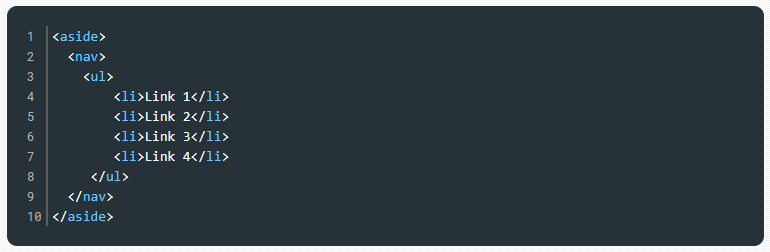

O header é utilizado para representar o cabeçalho de um documento ou seção declarado no HTML. Nele podemos inserir elementos de h1 a h6, até elementos para representar imagens, parágrafos ou mesmo listas de navegação.
Exemplo de uso de header:

O elemento section representa uma seção dentro de um documento e geralmente contém um título, o qual é definido por meio de um dos elementos entre h1 e h6. Podemos utilizar o section, por exemplo, para descrever as seções/tópicos de um documento. Exemplo de uso de section:

Utilizamos o elemento article quando precisamos declarar um conteúdo que não precisa de outro para fazer sentido em um documento HTML, por exemplo, um artigo em um blog. É recomendado identificar cada article com um título. Exemplo de uso de article:

O elemento nav é utilizado quando precisamos representar um agrupamento de links de navegação, que, por sua vez, são criados com os elementos ul, li e a. Exemplo de uso de nav:

O elemento aside é utilizado quando precisamos criar um conteúdo de apoio/adicional ao conteúdo principal. Por exemplo, ao falar de HTML semântico, podemos indicar ao leitor outros conteúdos sobre a linguagem HTML como sugestão de leitura complementar. Exemplo de uso de aside:
O elemento main especifica o conteúdo principal e, consequentemente, de maior relevância dentro da página. Para ser considerada bem construída, uma página deve apresentar apenas um conteúdo principal. Exemplo de uso de main:

O elemento figure é uma marcação de uso específico para a inserção de uma figura. Para incluir a descrição dessa figura, podemos utilizar o elemento figcaption. Exemplo de uso de figure:


O elemento footer representa um rodapé de um documento, como a área presente no final de uma página web. Normalmente é utilizado para descrever informações de autoria, como nome e contato do autor, e data de criação do conteúdo. Exemplo de uso de footer:

O elemento footer representa um rodapé de um documento, como a área presente no final de uma página web. Normalmente é utilizado para descrever informações de autoria, como nome e contato do autor, e data de criação do conteúdo. Exemplo de uso de footer: